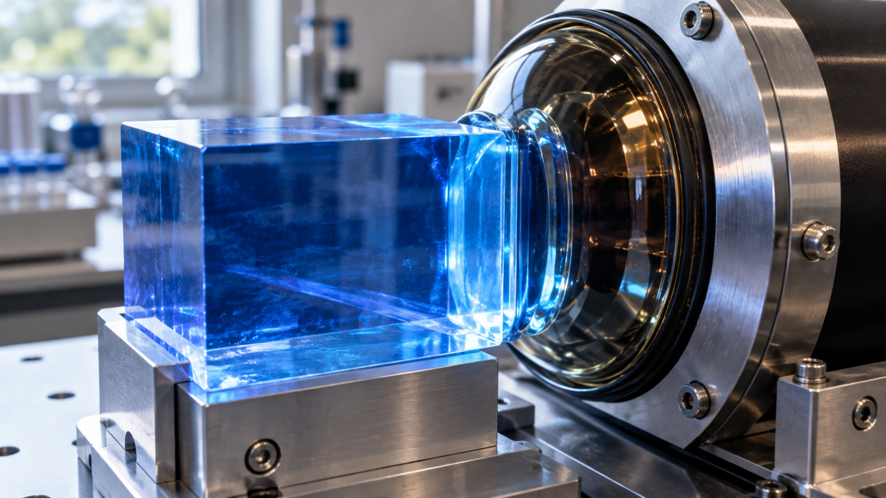
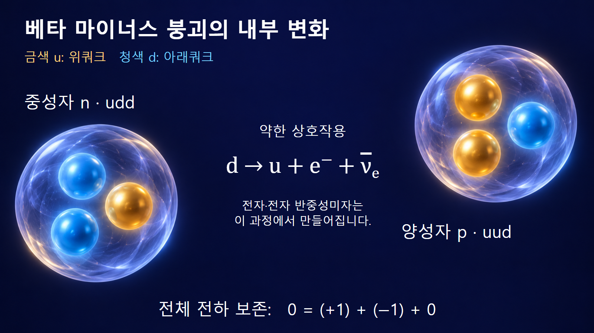
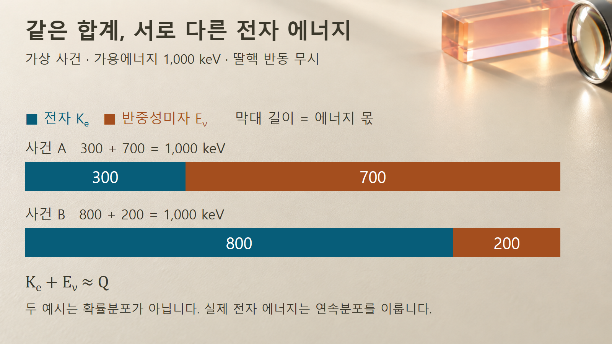

방사성붕괴와 시간 · 043
베타 마이너스 붕괴
중성자의 변환과 전자·전자 반중성미자의 에너지 분배

베타 마이너스 붕괴에서는 핵자수를 유지한 채 원소가 바뀝니다. 전자와 전자 반중성미자를 함께 추적하면 전하 보존과 연속적인 전자 에너지분포를 연결할 수 있습니다.
중성자의 변화와 세 입자
베타 마이너스 붕괴는 핵 안의 중성자 하나가 양성자로 바뀌면서 전자와 전자 반중성미자를 방출하는 과정입니다. 베타선이라고 부르는 방출입자는 이 전자이며, 이름의 ‘마이너스’는 전자의 음전하를 나타냅니다. 미국 에너지부의 설명은 전자 방출과 양전자 방출을 서로 다른 베타붕괴로 구분합니다.
중성자 하나가 사라진 자리에 양성자 하나가 생기므로 핵자수 A는 그대로입니다. 양성자수 Z는 1 늘고 중성자수 N은 1 줄어듭니다. 따라서 같은 질량수의 다른 원소로 바뀝니다. 전체 관계 n → p + e− + νe에서 n은 중성자, p는 양성자, e−는 전자, 마지막 기호는 전자 반중성미자를 뜻합니다.
쿼크 변화와 새로 생기는 전자
양성자와 중성자는 쿼크라는 더 작은 구성입자로 이루어진 복합입자입니다. 단순한 구성 표기에서 중성자는 위쿼크 u 하나와 아래쿼크 d 둘, 즉 udd이며, 양성자는 uud입니다. Fermilab의 베타붕괴 설명은 아래쿼크 하나가 위쿼크로 바뀌는 변화로 이를 설명합니다.
이 종류의 입자 변환에는 약한 상호작용이 관여합니다. 전하가 없는 중성자에서 양전하를 가진 양성자가 만들어질 때 음전하의 전자가 함께 생겨 전체 전하를 맞춥니다. 전자는 원래 중성자 안에 들어 있던 부품이 빠져나오는 것이 아닙니다.

전자 반중성미자는 전기적으로 중성인 입자이며 전자의 반입자인 양전자와는 다릅니다. 반중성미자를 단지 ‘보이지 않아 빠진 에너지’라는 이름표로 생각해서도 안 됩니다. 에너지와 운동량뿐 아니라 입자 종류에 관한 보존관계를 함께 만족하는 실제 방출입자입니다.
예시 1: 탄소-14의 질소-14 전환
탄소-14는 양성자 6개와 중성자 8개를 가집니다. 중성자 하나가 양성자로 바뀌면 양성자는 7개, 중성자는 7개가 됩니다. 따라서 146C → 147N + e− + νe로 적습니다. DOE의 원본 그림도 이 핵자 구성을 보여 줍니다.
질량수는 6 + 8 = 7 + 7 = 14로 유지됩니다. 핵의 전하만 비교하면 +6에서 +7로 늘지만, 방출 전자의 −1을 포함한 합은 +6으로 같습니다. 단위 전하량을 e라고 하면 이 숫자는 모두 e의 배수입니다. 반중성미자의 전하는 0이므로 전하 합을 바꾸지 않습니다.
이 식은 원자핵 수준의 변화입니다. 실제 원자의 전자껍질은 이후 재배열될 수 있으므로 핵반응식만 보고 곧바로 최종 원자의 이온 상태까지 정하면 안 됩니다. 또한 A가 같다는 이유로 탄소와 질소의 화학적 성질도 같다고 판단할 수는 없습니다.
예시 2: 같은 가용에너지의 서로 다른 분배
부모핵이 정지한 상태에서 한 베타붕괴 분기가 일어났다고 가정하겠습니다. 전자와 반중성미자가 나누어 가질 에너지를 Q = 1,000 keV로 놓고 딸핵 반동과 중성미자의 아주 작은 질량 효과는 무시합니다. keV는 천 전자볼트라는 에너지 단위입니다. 이 값은 에너지 분배를 설명하기 위한 가상 입력이며 탄소-14의 실제 방출에너지가 아닙니다.
첫 사건에서 전자가 300 keV를 받으면 반중성미자는 약 700 keV를 받습니다. 둘째 사건에서 전자가 800 keV를 받으면 반중성미자는 약 200 keV를 받습니다. 두 사건 모두 합은 1,000 keV이지만 전자의 에너지는 서로 다릅니다.

실제로는 이 두 경우만 있는 것이 아니라 허용되는 에너지 범위 안에서 여러 분배가 가능합니다. 많은 붕괴의 전자 에너지를 모으면 연속적인 분포가 나타납니다. LBNL의 마지막 에너지 설명은 딸핵 반동까지 포함한 세 입자 사이의 분배로 이 현상을 설명합니다.
정밀 계산에서는 Q = Ke + Eν + Kd로 딸핵 운동에너지 Kd를 포함해야 합니다. 딸핵의 여기상태로 가는 분기라면 그 분기에 실제로 남는 가용에너지를 써야 합니다. 전자가 받을 수 있는 최대값과 여러 전자의 평균값도 서로 다릅니다.
관측 스펙트럼과 반중성미자의 역할
에너지 스펙트럼은 전자를 에너지 구간별로 세어 얻는 분포입니다. 방출된 전자의 분포와 검출기가 기록한 분포 사이에는 물질에서의 에너지 손실과 검출기의 응답이 놓여 있습니다. 따라서 검출기에 낮은 에너지 신호가 많다고 해서 원래 모든 전자가 그 에너지로 방출됐다고 해석할 수는 없습니다.
원자력 분야에서는 베타붕괴가 만드는 전자와 반중성미자를 구별하는 것이 중요합니다. Fermilab은 원자로에서 중성자가 양성자로 바뀌는 베타붕괴를 반중성미자의 발생 과정으로 설명합니다. 전자 계측값에 모든 방출에너지가 담겨 있다고 가정하면 반중성미자가 운반하는 몫을 빠뜨리게 됩니다.
아래 표는 무엇을 관측했는지에 따라 어떤 해석이 가능한지 비교합니다. 특히 한 개 전자의 에너지와 시료 전체의 붕괴율은 서로 다른 측정량이며, 베타라는 입자 이름만으로 둘을 환산하지 않습니다.
| 관측·정보 | 알 수 있는 내용 | 추가 조건 |
|---|---|---|
| 딸핵의 Z 증가 | 핵의 원소 변화 | 전자껍질의 이온화와 구별 |
| 한 전자의 에너지 | 그 사건의 전자 몫 | 반중성미자·반동의 몫 |
| 전자 스펙트럼 | 많은 사건의 분포 | 분기·에너지 손실·검출 응답 |
| 시간당 검출 수 | 계측기의 계수율 | 효율·기하형상·배경 |
전자 방출과 전자껍질 변화의 구별
원자 바깥의 전자가 빠져나가는 이온화와 베타 마이너스 붕괴는 다릅니다. 이온화만으로는 핵의 양성자수가 바뀌지 않지만 베타붕괴에서는 핵의 양성자수가 증가합니다. 검출한 입자가 모두 전자일 수 있어도 전자를 만든 물리적 과정은 구별해야 합니다.
핵 안의 모든 중성자가 자유 중성자와 같은 시간에 붕괴하는 것도 아닙니다. 가능한 최종 핵상태와 에너지 조건이 핵종마다 다르기 때문입니다. 알파붕괴에서 네 핵자가 함께 나가던 경우와 달리, 여기에서는 핵자수는 유지되며 내부의 입자 종류가 바뀝니다.
핵종·전하·에너지의 연결
베타 마이너스 붕괴를 읽을 때는 먼저 중성자에서 양성자로의 변환을 확인하고, A는 유지되며 Z가 하나 늘어나는 딸핵을 찾습니다. 다음으로 방출 전자와 전자 반중성미자를 함께 써서 전하와 에너지의 합을 맞춥니다.
이때 전자는 붕괴 과정에서 만들어지고, 에너지는 사건마다 다르게 분배될 수 있습니다. 이러한 두 사실을 함께 이해하면 핵종 변화와 연속 베타스펙트럼이 하나의 과정으로 연결됩니다. 다음 글의 베타 플러스 붕괴에서는 전하 변화와 방출되는 입자의 종류가 어떻게 달라지는지 비교합니다.